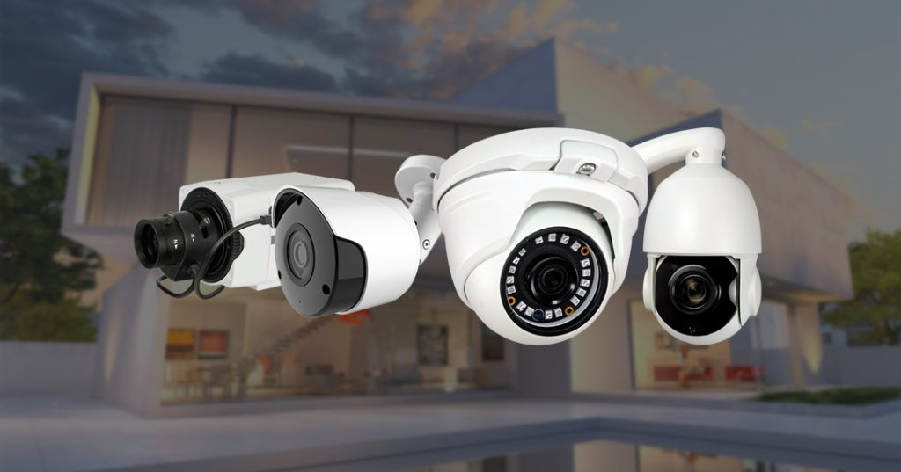

Artículos de Cámaras de Seguridad

¿Qué son las Cámaras de Seguridad y Para Qué Sirven?
Leer más
Tipos de Cámaras de Seguridad: Cableadas vs. Inalámbricas
Leer más
Conceptos Básicos en Cámaras de Seguridad
Leer más
Almacenamiento de Video: Local (DVR/NVR) vs. en la Nube
Leer más
Solución de Problemas Comunes en Cámaras de Seguridad
Leer más
Configuración Avanzada de Cámaras IP y Redes
Leer más
Ciberseguridad en Cámaras de Seguridad
Leer más
Funciones Avanzadas con Inteligencia Artificial en Cámaras
Leer más